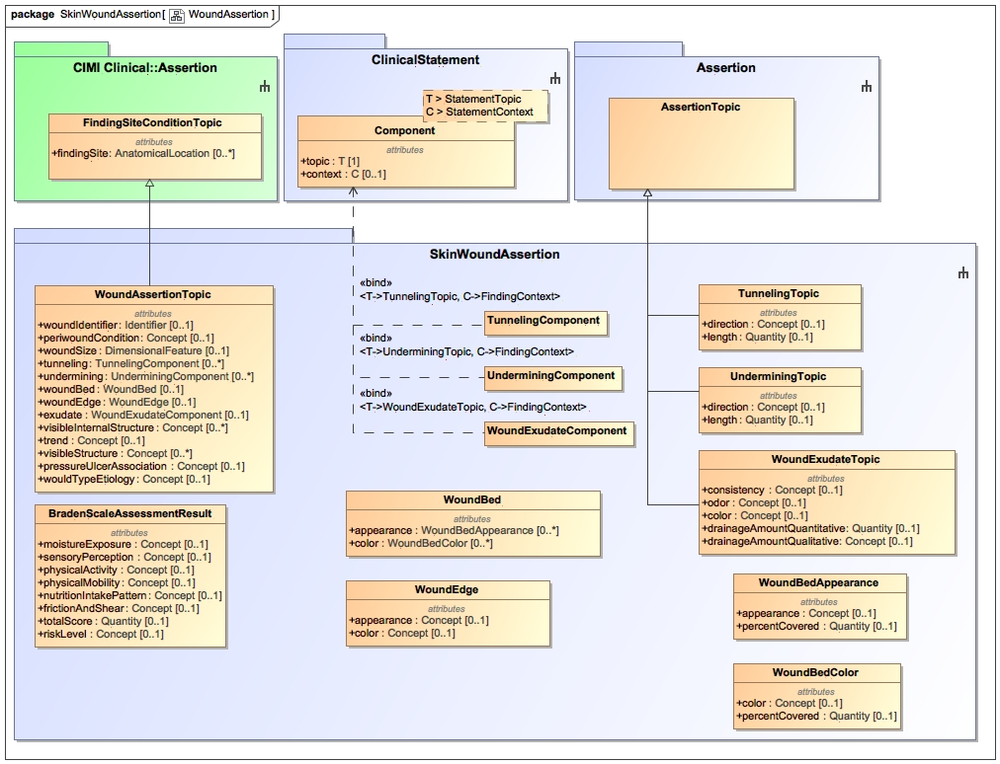

The skin and wound evaluation result model covers the assessment of a patient’s skin and wound(s). The model began as a project initiated by the Veteran’s Administration (VA) and Kaiser Permanente (KP). It was taken up by the Nursing LOINC Subcommittee and harmonized across the industry (Harris et al., 2015). At the same time, the HL7 Patient Care Working Group used the VA/KP model to develop a risk assessment for pressure ulcers (now called injuries). The model demonstrates four observation patterns: Evaluation results (question and answer pattern, used primarily for skin assessments, e.g., skin color), Assertions (identification of a phenomenon, e.g., presence of wound), properties (characteristics of an asserted phenomenon, e.g., size and location), and sub-assertions (dependent on a prior assertion, but possibly absent, e.g., wound tunneling). The model has been vetted through and approved by the VA wound care nurses and the National Pressure Ulcer Advisory Panel (NPUAP).
Harris, M. R., Langford, L. H., Miller, H., Hook, M., Dykes, P. C., & Matney, S. A. (2015). Harmonizing and extending standards from a domain-specific and bottom-up approach: An example from development through use in clinical applications. Journal of American Medical Informatics Association, 22(3), 545-552.
